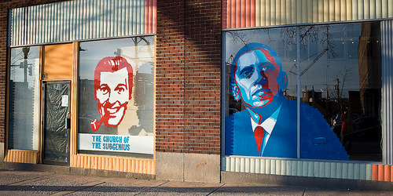

120 W. North Avenue
Building History
1. Automobile Dealerships
2. E.T. Newell Auctioneers
3. Lombard Office Furniture
4. Load of Fun
5. The Motor House
Best known by its legacy as Load of Fun, 120 W. North
Avenue closed in 2012 following an anonymous phone
call placed to the city pointing to violations of fire code
in the building. The closing was met with great controversy,
as Load of Fun had served as artist studios and performance
space for six years. Nearly three years after Load of Fun’s
closing, the space again is being renovated, this time by
BARCO as artist studios and retail space under the name “Motor House.”
In the early twentieth century, 120 W. North Ave was
occupied by a slew of automobile companies, including
the Eastwick Motor Company, W. C. Coles Incorporated
Auto Distribution, Jones Automobile Company, and Kernan
Motor Sales. The building still stands as a testament to
the importance of the automobile industry on the city’s
economy for so many years; only a few blocks north on
25th Street, Anderson of Baltimore, exclusively a full-
service body shop since 2009, functioned as the final
operating dealership in the area. The remains of another
once-successful car dealership can be seen just a few
blocks south at 1111 Maryland Ave, now housing the
cleaning supply company Odorite.
Interspersed by periods of vacancy, the building at
120 North Ave again changed hands in 1978 to house
Lombard Office Furniture, a name and sign that would
eventually be edited down to “Load of Fun” by early
tenants Trixie Little and Evil Hate Monkey. Barry
and Beatrice Gotthelf ran Lombard Office Furniture
until 2005 when Sherwin Mark offered to purchase
the space, transforming the labyrinth of shelves
and office furniture into artist studios..
Load of Fun is described as a utopian studio space
by many ofits previous tenants, housing a variety
of artists and performers in its studios with communal
space for constant dialogue, interaction, and collaboration.
Single Carrot Theatre, Make Studio, Baltimore Node
Corporation, and What Weekly are just a small handful
of projects that once occupied the space, all of whom
have since found new spaces to continue their practice.
Mara Neimanis is an aerial artist who performed, taught
classes,and organized the Baltimore Alley Aerial Festival
for three years during her time at Load of Fun.
The Contemporary: What did the space provide for you?
Mara Neimanis: It had to do with permission. Rigging
permission,litigation. What Load of Fun was for me
was an incredible foray into permission. Sherwin Marks
ran the space when I was there. He gave me a lot of
permission to do things that I really needed to do.
I was paying for rent and I needed to do things so
I had to get his green light.
TC: Did the physical space contribute to its success?
Mara Neimanis: Load of Fun was an incubator for
innovative things that were not only happening in
the city but happening for the city. There were
large circular spaces on each level of the building,
and [all of the artists] would meet and hang out and
talk...The fact is that the building itself allowed for
incredible meetings in the hallways. There were a bunch
of photographers who had their own collective darkroom
that Sherwin built, because he, too, was a photographer.
When they were using it I would clean my dog off in the
big sink. Sergio(?), from Station North, came from DC
and fell in love with Load of Fun and Sherwin.
He took the whole third floor and made it into a
carpentry studio. Then he grew too big for the space.
He threw parties on the roof, and they would have dinner
parties in the middle of the gallery. You could join in,
and these things were happening all the time….
[Load of Fun] was very much a part of the pulse of life.
It wasn’t like I went to the studio and then I went home.
It was very much a part of everything. I think that most
people would agree with that. Now I go to the studio and
it’s a very separate place. In some respects it’s better,
it’s great, that’s what you want in a studio.